Chapter 4: LECTURE IV THE GENERAL THEORY OF RELATIVITY ( continued )¶
4.1 LECTURE IV THE GENERAL THEORY OF RELATIVITY ( continued )¶
WE are now in possession of the mathematical apparatus which is necessary to formulate the laws of the general theory of relativity. No attempt will be made in this presentation at systematic completeness, but single results and possibilities will be developed progressively from what is known and from the results obtained. Such a presentation is most suited to the present provisional state of our knowledge.
A material particle upon which no force acts moves, according to the principle of inertia, uniformly in a straight line. In the four-dimensional continuum of the special theory of relativity (with real time co-ordinate) this is a real straight line. The natural, that is, the simplest, generalization of the straight line which is plausible in the system of concepts of Riemann's general theory of invariants is that of the straightest, or geodetic, line. We shall accordingly have to assume, in the sense of the principle of equivalence, that the motion of a material particle, under the action only of inertia and gravitation, is described by the equation,  In fact, this equation reduces to that of a straight line if all the components,
In fact, this equation reduces to that of a straight line if all the components,  , of the gravitational field vanish.
, of the gravitational field vanish.
How are these equations connected with Newton's equations of motion? According to the special theory of relativity, the  as well as the
as well as the  , have the values, with respect to an inertial system (with real time co-ordinate and suitable choice of the sign of
, have the values, with respect to an inertial system (with real time co-ordinate and suitable choice of the sign of  ), The equations of motion then become
), The equations of motion then become
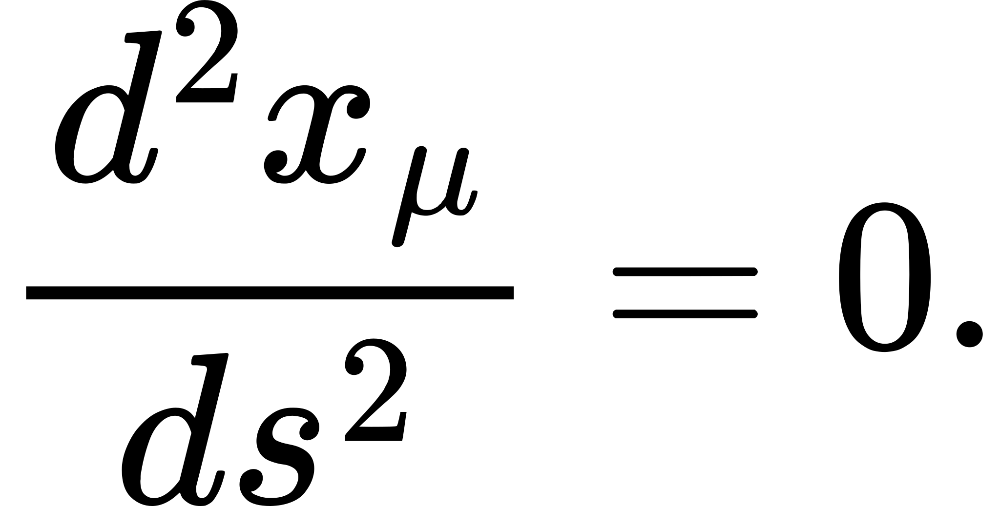
We shall call this the "first approximation" to the-field. In considering approximations it is often useful, as in the special theory of relativity, to use an imaginary  -co-ordinate, as then the . to the first approximation, assume the values
-co-ordinate, as then the . to the first approximation, assume the values 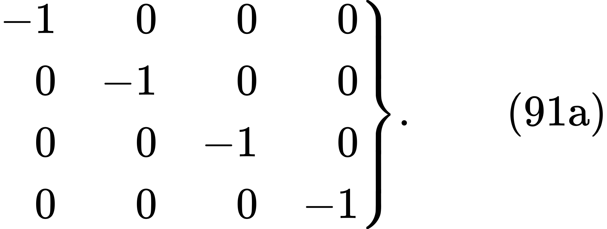
These values may be collected in the relation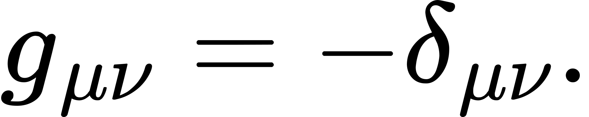
To the second approximation we must then put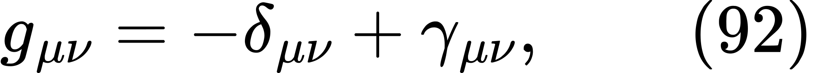
where the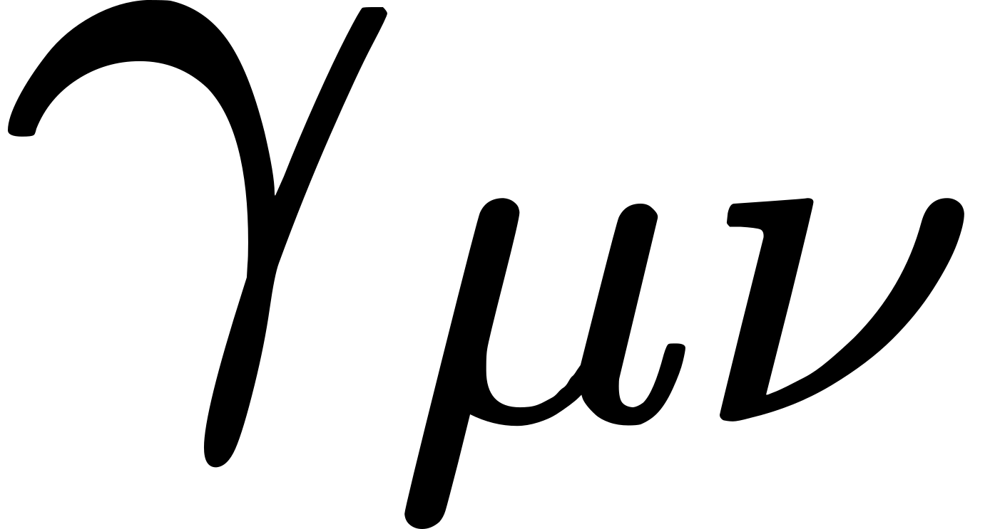
are to be regarded as small of the first order.Both terms of our equation of motion are then small of the first order. If we neglect terms which, relatively to these, are small of the first order, we have to put
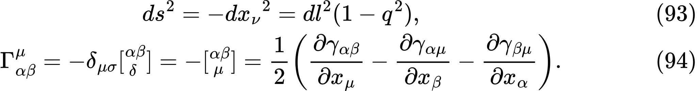
We shall now introduce an approximation of a second kind. Let the velocity of the material particles be very small compared to that of light. Then will be the same as the time differential,
will be the same as the time differential,  . Further, , , will vanish compared to
. Further, , , will vanish compared to 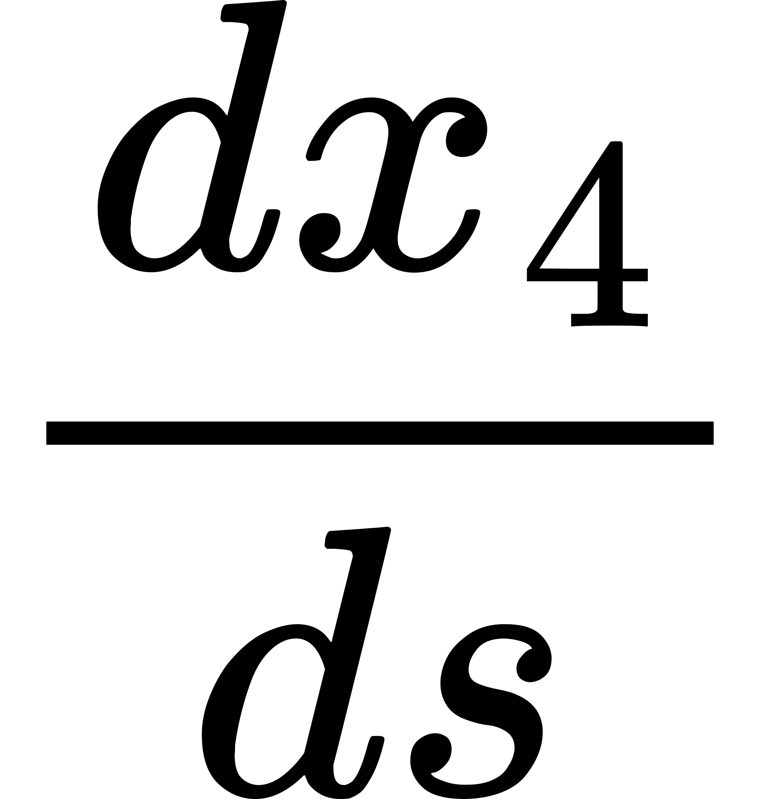
. We shall assume, in addition, that the gravitational field varies so little with the time that the derivatives of the by may be neglected. Then the equation of motion (for  = 1,2,3) reduces to
= 1,2,3) reduces to 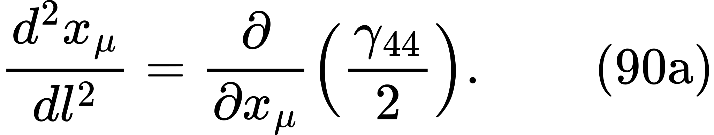
This equation is identical with Newton's equation of motion for a material particle in a gravitational field, if we identify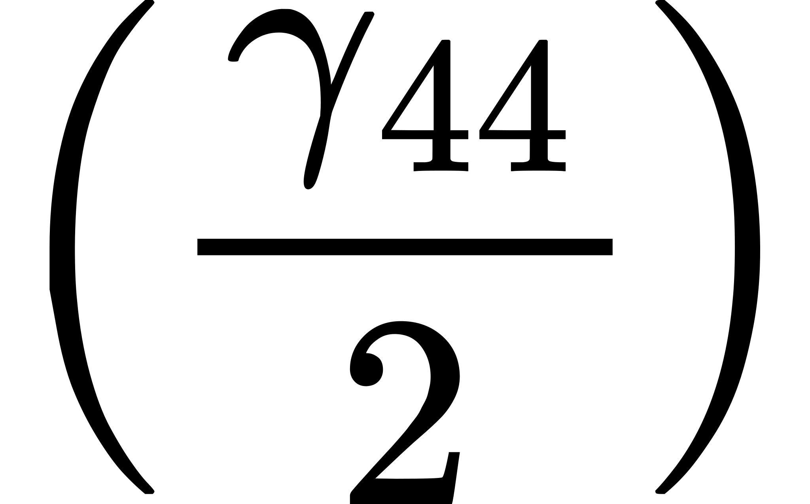
with the potential of the gravitational field; whether or not this is allowable, naturally depends upon the field equations of gravitation, that is, it depends upon whether or not this quantity satisfies, to a first approximation, the same laws of the field as the gravitational potential in Newton's theory. A glance at (90) and (90a) shows that the actually do play the rôle of the intensity of the gravitational field. These quantities do not have a tensor character.
Equations (90) express the influence of inertia and gravitation upon the material particle. The unity of inertia and gravitation is formally expressed by the fact that the whole left-hand side of (90) has the character of a tensor (with respect to any transformation of co-ordinates), but the two terms taken separately do not have tensor character, so that, in analogy with Newton's equations, the first term would be regarded as the expression for inertia, and the second as the expression for the gravitational force.
We must next attempt to find the laws of the gravitational field. For this purpose, Poisson's equation,
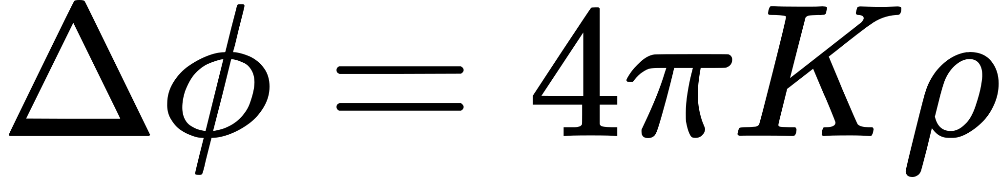
of the Newtonian theory must serve as a model. This equation has its foundation in the idea that the gravitational field arises from the density of ponderable matter. It must also be so in the general theory of relativity. But our investigations of the special theory of relativity have shown that in place of the scalar density of matter we have the tensor of energy per unit volume. In the latter is included not only the tensor of the energy of ponderable matter, but also that of the electromagnetic energy. We have seen, indeed, that in a more complete analysis the energy tensor can be regarded only as a provisional means of representing matter. In reality, matter consists of electrically charged particles, and is to be regarded itself as a part, in fact, the principal part, of the electromagnetic field. It is only the circumstance that we have not sufficient knowledge of the electromagnetic field of concentrated charges that compels us, provisionally, to leave undetermined in presenting the theory, the true form of this tensor. From this point of view our problem now is to introduce a tensor,
of ponderable matter. It must also be so in the general theory of relativity. But our investigations of the special theory of relativity have shown that in place of the scalar density of matter we have the tensor of energy per unit volume. In the latter is included not only the tensor of the energy of ponderable matter, but also that of the electromagnetic energy. We have seen, indeed, that in a more complete analysis the energy tensor can be regarded only as a provisional means of representing matter. In reality, matter consists of electrically charged particles, and is to be regarded itself as a part, in fact, the principal part, of the electromagnetic field. It is only the circumstance that we have not sufficient knowledge of the electromagnetic field of concentrated charges that compels us, provisionally, to leave undetermined in presenting the theory, the true form of this tensor. From this point of view our problem now is to introduce a tensor,  . of the second rank, whose structure we do not know provisionally, and which includes in itself the energy density of the electromagnetic field and of ponderable matter; we shall denote this in the following as the "energy tensor of matter."
. of the second rank, whose structure we do not know provisionally, and which includes in itself the energy density of the electromagnetic field and of ponderable matter; we shall denote this in the following as the "energy tensor of matter."
According to our previous results, the principles of momentum and energy are expressed by the statement that the divergence of this tensor vanishes (47c). In the general theory of relativity, we shall have to assume as valid the corresponding general co-variant equation. If () denotes the co-variant energy tensor of matter,
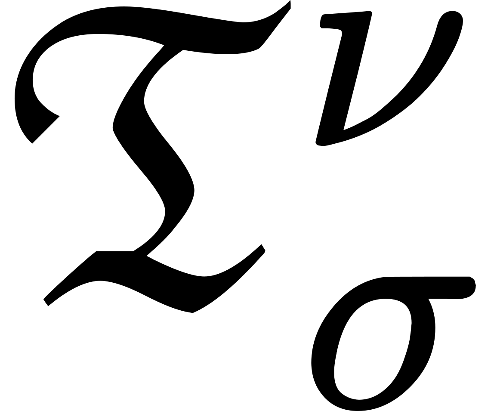
the corresponding mixed tensor density, then, in accordance with (83), we must require that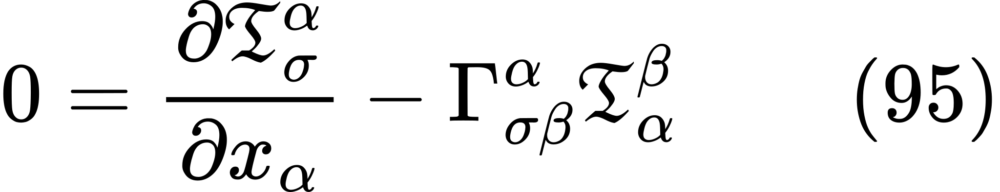
be satisfied. It must be remembered that besides the energy density of the matter there must also be given an energy density of the gravitational field, so that there can be no talk of principles of conservation of energy and momentum for matter alone. This is expressed mathematically by the presence of the second term in (95), which makes it impossible to conclude the existence of an integral equation of the form of (49). The gravitational field transfers energy and momentum to the "matter," in that it exerts forces upon it and gives it energy; this is expressed by the second term in (95).If there is an analogue of Poisson's equation in the general theory of relativity, then this equation must be a tensor equation for the tensor of the gravitational potential; the energy tensor of matter must appear on the right-hand side of this equation. On the left-hand side of the equation there must be a differential tensor in the . We have to find this differential tensor. It is completely determined by the following three conditions:—
1. It may contain no differential coefficients of the higher than the second.
2. It must be linear and homogeneous in these second differential coefficients.
3. Its divergence must vanish identically.
The first two of these conditions are naturally taken from Poisson's equation. Since it may be proved mathematically that all such differential tensors can be formed algebraically (i.e. without differentiation) from Riemann's tensor, our tensor must be of the form
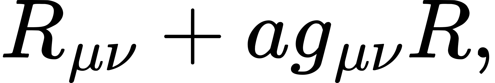
in which and
and  are defined by (88) and (89) respectively. Further, it may be proved that the third condition requires a to have the value
are defined by (88) and (89) respectively. Further, it may be proved that the third condition requires a to have the value 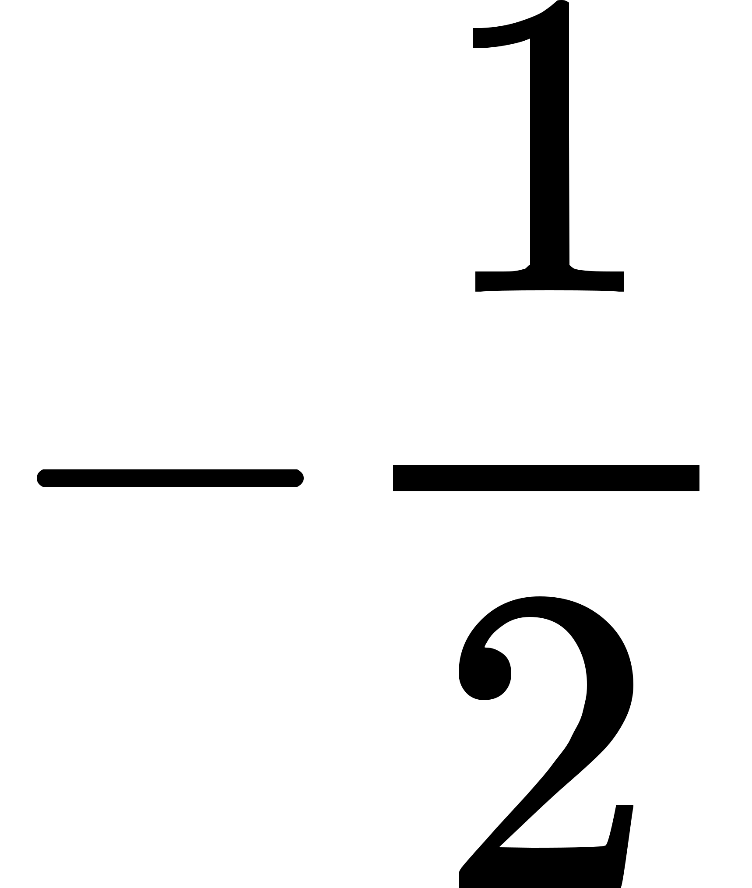
. For the law of the gravitational field we therefore get the equation Equation (95) is a consequence of this equation. denotes a constant, which is connected with the Newtonian gravitation constant.In the following I shall indicate the features of the theory which are interesting from the point of view of physics, using as little as possible of the rather involved mathematical method. It must first be shown that the divergence of the left-hand side actually vanishes. The energy principle for matter may be expressed, by (83),
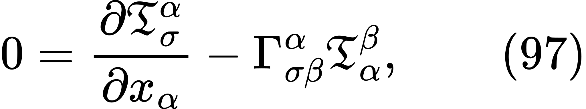
in which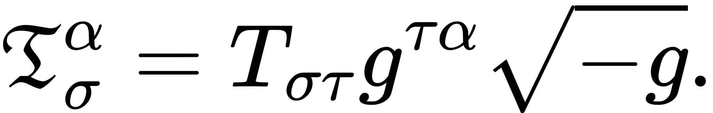
The analogous operation, applied to the left-hand side of (96), will lead to an identity.In the region surrounding each world-point there are systems of co-ordinates for which, choosing the -co-ordinate imaginary, at the given point,
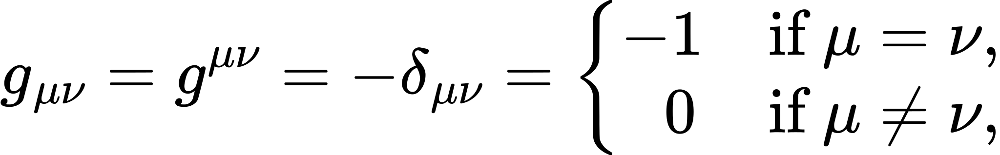
and for which the first derivatives of the and the vanish. We shall verify the vanishing of the divergence of the left-hand side at this point. At this point the components 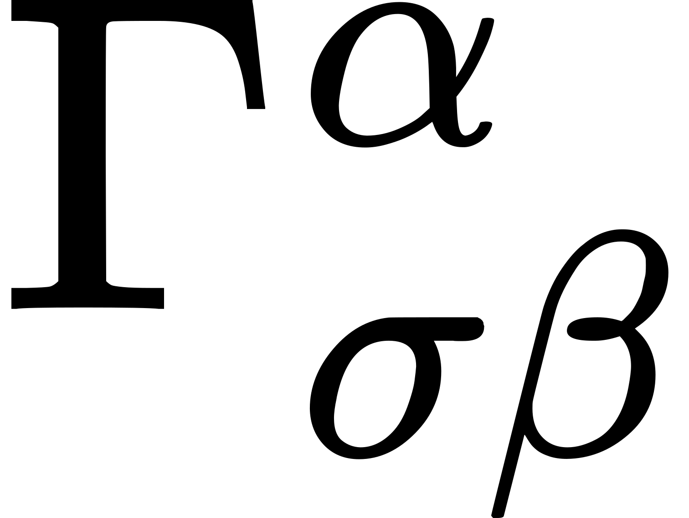
vanish, so that we have to prove the vanishing only of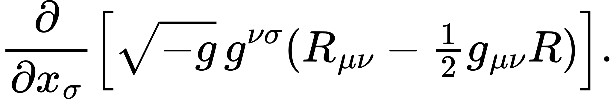
Introducing (88) and (70) into this expression, we see that the only terms that remain are those in which third derivatives of the enter. Since the are to be replaced by 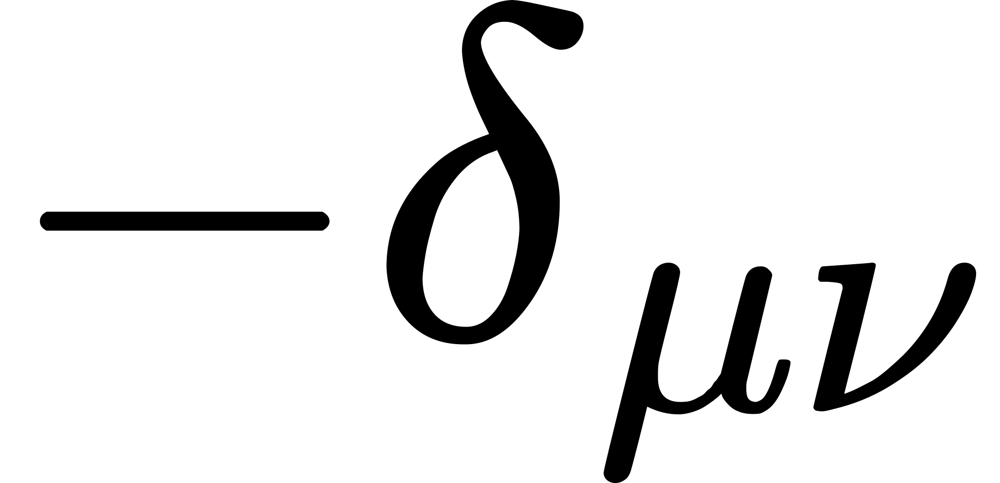
, we obtain, finally, only a few terms which may easily be seen to cancel each other. Since the quantity that we have formed has a tensor character, its vanishing is proved for every other system of co-ordinates also, and naturally for every other four-dimensional point. The energy principle of matter (97) is thus a mathematical consequence of the field equations (96).In order to learn whether the equations (96) are consistent with experience, we must, above all else, find out whether they lead to the Newtonian theory as a first approximation. For this purpose we must introduce various approximations into these equations. We already know that Euclidean geometry and the law of the constancy of the velocity of light are valid, to a certain approximation, in regions of a great extent, as in the planetary system. If, as in the special theory of relativity, we take the fourth co-ordinate imaginary, this means that we must put in which the are so small compared to 1 that we can neglect the higher powers of the and their derivatives. If we do this, we learn nothing about the structure of the gravitational held, or of metrical space of cosmical dimensions, but we do learn about the influence of neighbouring masses upon physical phenomena.
Before carrying through this approximation we shall transform (96). We multiply (96) by , summed over the and  observing the relation which follows from the definition of the ,
observing the relation which follows from the definition of the ,
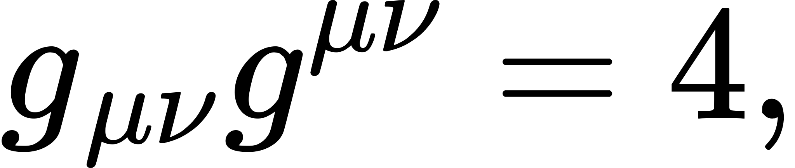
we obtain the equation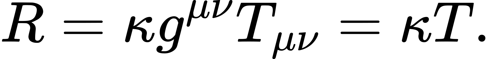
If we put this value of in (96) we obtain When the approximation which has been mentioned is carried out, we obtain for the left-hand side, 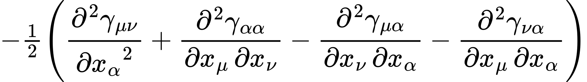
or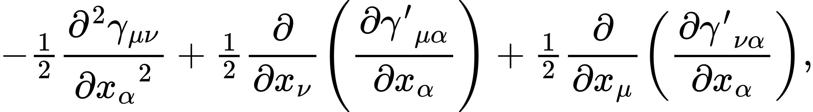
in which has been put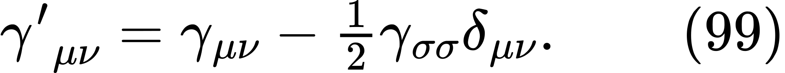
We must now note that equation (96) is valid for any system of co-ordinates. We have already specialized the system of co-ordinates in that we have chosen it so that within the region considered the differ infinitely little from the constant values . But this condition remains satisfied in any infinitesimal change of co-ordinates, so that there are still four conditions to which the may be subjected, provided these conditions do not conflict with the conditions for the order of magnitude of the . We shall now assume that the system of co-ordinates is so chosen that the four relations—
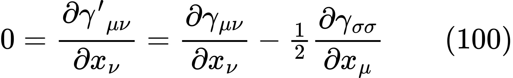
are satisfied. Then (96a) takes the form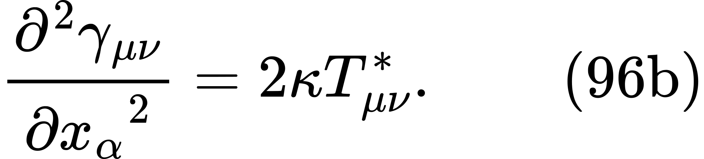
These equations may be solved by the method, familiar in electrodynamics, of retarded potentials; we get, in an easily understood notation,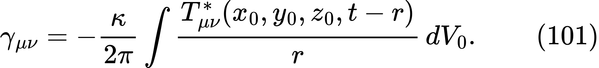
In order to see in what sense this theory contains the Newtonian theory, we must consider in greater detail the energy tensor of matter. Considered phenomenologically, this energy tensor is composed of that of the electromagnetic field and of matter in the narrower sense. If we consider the different parts of this energy tensor with respect to their order of magnitude, it follows from the results of the special theory of relativity that the contribution of the electromagnetic field practically vanishes in comparison to that of ponderable matter. In our system of units, the energy of one gram of matter is equal to 1, compared to which the energy of the electric fields may be ignored, and also the energy of deformation of matter, and even the chemical energy. We get an approximation that is fully sufficient for our purpose if we put In this,  is the density at rest, that is, the density of the ponderable matter, in the ordinary sense, measured with the aid of a unit measuring rod, and referred to a Galilean system of co-ordinates moving with the matter.
is the density at rest, that is, the density of the ponderable matter, in the ordinary sense, measured with the aid of a unit measuring rod, and referred to a Galilean system of co-ordinates moving with the matter.
We observe, further, that in the co-ordinates we have chosen, we shall make only a relatively small error if we replace the by , so that we put
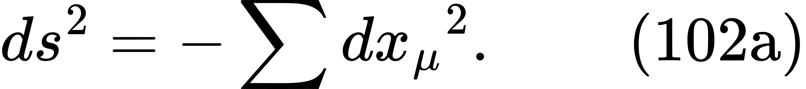
The previous developments are valid however rapidly the masses which generate the field may move relatively to our chosen system of quasi-Galilean co-ordinates. But in astronomy we have to do with masses whose velocities, relatively to the co-ordinate system employed, are always small compared to the velocity of light, that is, small compared to 1, with our choice of the unit of time. We therefore get an approximation which is sufficient for nearly all practical purposes if in (101) we replace the retarded potential by the ordinary (non-retarded) potential, and if, for the masses which generate the field, we put
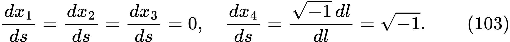
Then we get for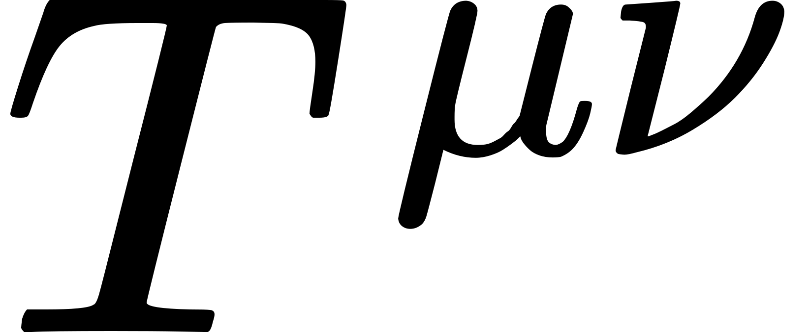
and the values 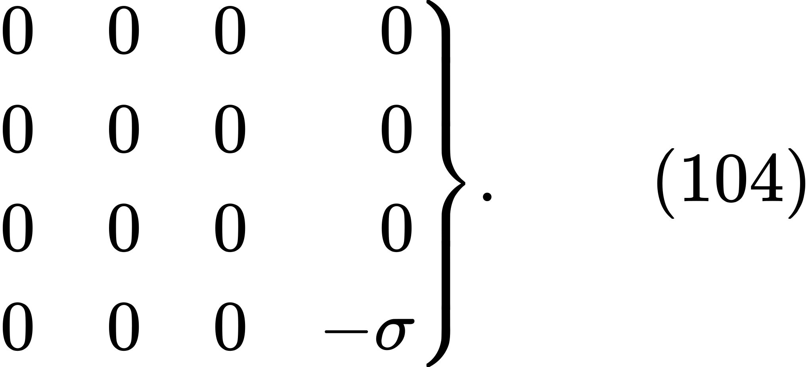
For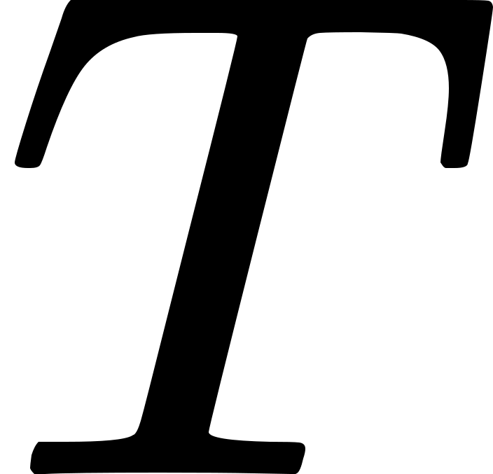
we get the value, and, finally, for 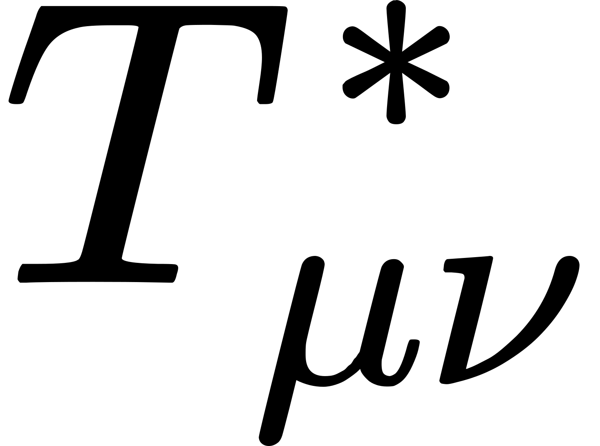
the values,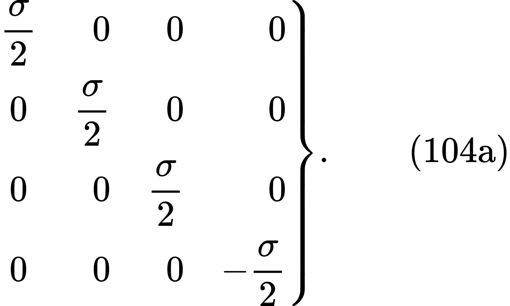
We thus get, from (101),
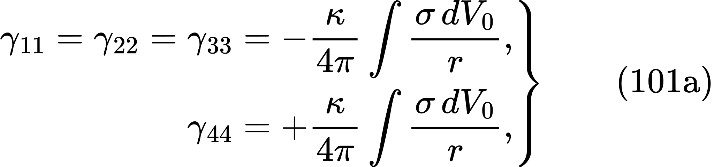
while all the other , vanish. The least of these equations, in connexion with equation (90a), contains Newton's theory of gravitation. If we replace by
by  we get
we get 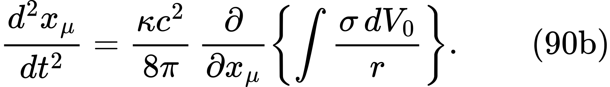
We see that the Newtonian gravitation constant , is connected with the constant that enters into our field equations by the relation
, is connected with the constant that enters into our field equations by the relation 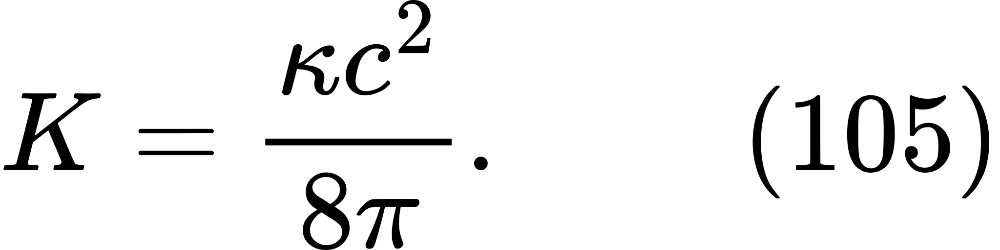
From the known numerical value of, it therefore follows that 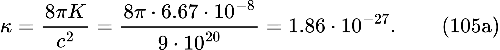
From (101) we see that even in the first approximation the structure of the gravitational field differs fundamentally from that which is consistent with the Newtonian theory; this difference lies in the fact that the gravitational potential has the character of a tensor and not a scalar. This was not recognized in the past because only the component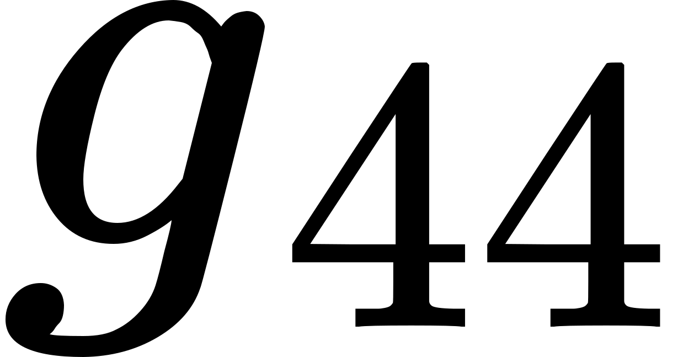
, to a first approximation, enters the equations of motion of material particles.In order now to be able to judge the behaviour of measuring rods and clocks from our results, we must observe the following. According to the principle of equivalence, the metrical relations of the Euclidean geometry are valid relatively to a Cartesian system of reference of infinitely small dimensions, and in a suitable state of motion (freely falling, and without rotation). We can make the same statement for local systems of co-ordinates which, relatively to these, have small accelerations, and therefore for such systems of co-ordinates as are at rest relatively to the one we have selected. For such a local system, we have, for two neighbouring point events,
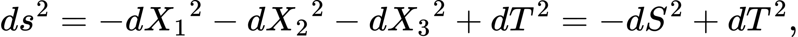
where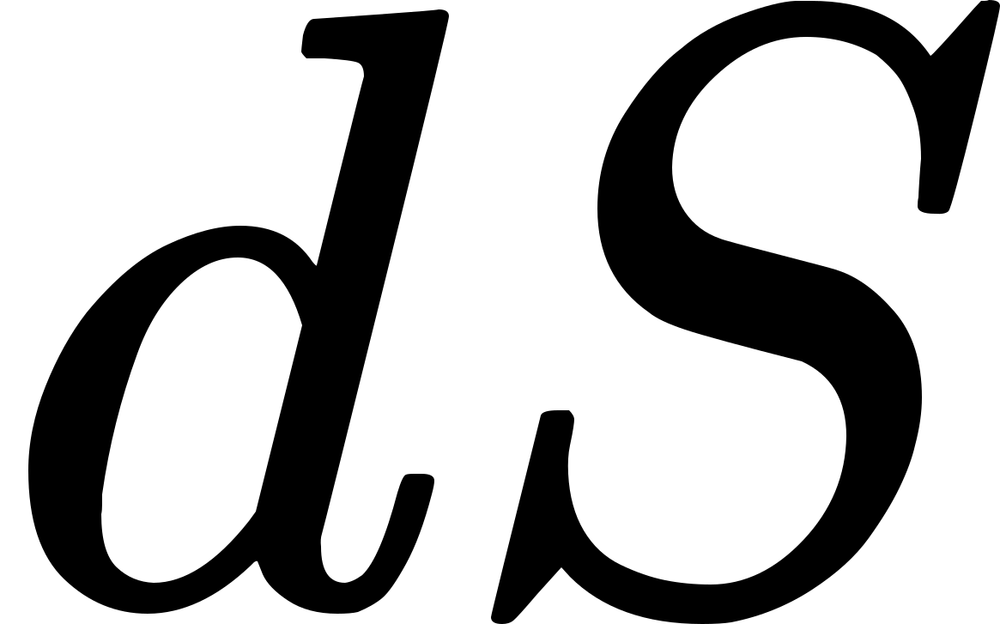
is measured directly by a measuring rod and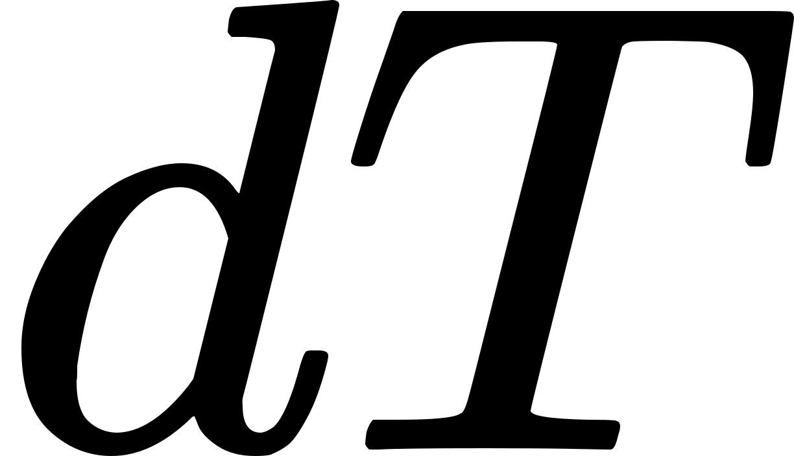
by a clock at rest relatively to the system; these are the naturally measured lengths and times. Since, on the other hand, is known in terms of the co-ordinates  employed in finite regions, in the form
employed in finite regions, in the form 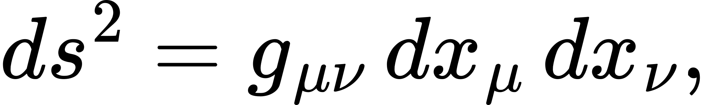
we have the possibility of getting the relation between naturally measured lengths and times, on the one hand, and the corresponding differences of co-ordinates, on the other hand. As the division into space and time is in agreement with respect to the two systems of co-ordinates, so when we equate the two expressions for we get two relations. If, by (101a), we put 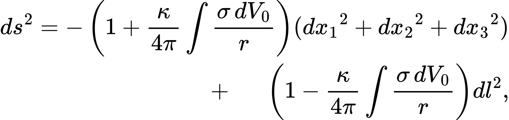
we obtain, to a sufficiently close approximation,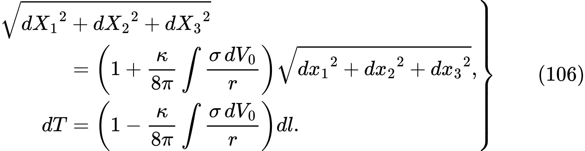
The unit measuring rod has therefore the length, in respect to the system of co-ordinates we have selected. The particular system of co-ordinates we have selected insures that this length shall depend only upon the place, and not upon the direction. If we had chosen a different system of co-ordinates this would not be so. But however we may choose a system of co-ordinates, the laws of configuration of rigid rods do not agree with those of Euclidean geometry; in other words, we cannot choose any system of co-ordinates so that the co-ordinate differences,  ,
,  ,
,  , corresponding to the ends of a unit measuring rod, oriented in any way, shall always satisfy the relation
, corresponding to the ends of a unit measuring rod, oriented in any way, shall always satisfy the relation
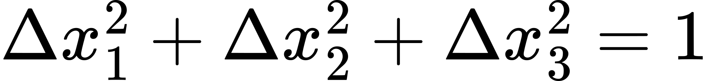
. In this sense space is not Euclidean, but "curved." It follows from the second of the relations above that the interval between two beats of the unit clock ( = 1) corresponds to the "time"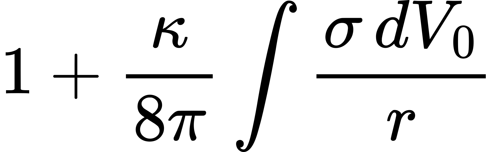
in the unit used in our system of co-ordinates. The rate of a clock is accordingly slower the greater is the mass of the ponderable matter in its neighbourhood. We therefore conclude that spectral lines which are produced on the sun's surface will be displaced towards the red, compared to the corresponding lines produced on the earth, by about 2 • 10-6 of their wave-lengths. At first, this important consequence of the theory appeared to conflict with experiment; but results obtained during the past year seem to make the existence of this effect more probable, and it can hardly be doubted that this consequence of the theory will be confirmed within the next year.Another important consequence of the theory, which can be tested experimentally, has to do with the path of rays of light. In the general theory of relativity also the velocity of light is everywhere the same, relatively to a local inertial system. This velocity is unity in our natural measure of time. The law of the propagation of light in general co-ordinates is therefore, according to the general theory of relativity, characterized, by the equation
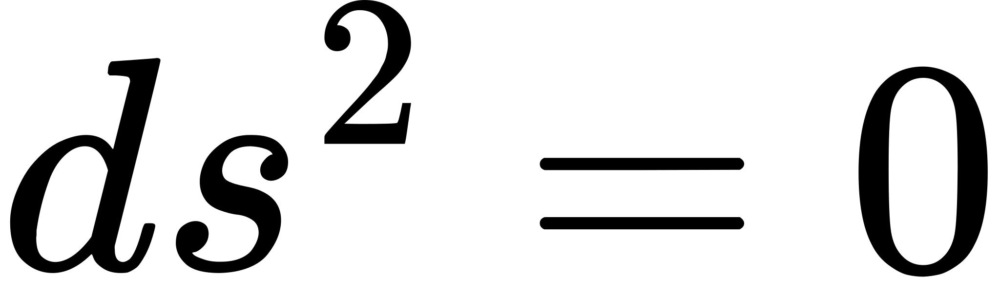
To within the approximation which we are using, and in the system of co-ordinates which we have selected, the velocity of light is characterized, according to (106), by the equation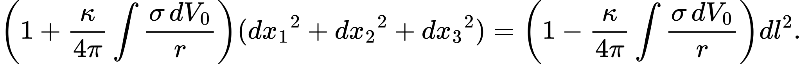
The velocity of light , is therefore expressed in our co-ordinates by We can therefore draw the conclusion from this, that a ray of light passing near a large mass is deflected. If we imagine the sun, of mass concentrated at the origin of our system of co-ordinates, then a ray of fight, travelling parallel to the -axis. in the plane, at a distance
-axis. in the plane, at a distance  from the origin, will be deflected, in all, by an amount towards the sun. On performing the integration we get
from the origin, will be deflected, in all, by an amount towards the sun. On performing the integration we get
The existence of this deflection, which amounts to 1.7'' for equal to the radius of the sun, was confirmed, with remarkable accuracy, by the English Solar Eclipse Expedition in 1919, and most careful preparations have been made to get more exact observational data at the solar eclipse in 1922. It should be noted that this result, also, of the theory is not influenced by our arbitrary choice of a system of co-ordinates.
This is the place to speak of the third consequence of the theory which can be tested by observation, namely, that which concerns the motion of the perihelion of the planet Mercury. The secular changes in the planetary orbits are known with such accuracy that the approximation we have been using is no longer sufficient for a comparison of theory and observation. It is necessary to go back to the general field equations (96). To solve this problem I made use of the method of successive approximations. Since then, however, the problem of the central symmetrical statical gravitational field has been completely solved by Schwarzschild and others; the derivation given by H. Weyl in his book, "Raum-Zeit-Materie," is particularly elegant. The calculation can be simplified somewhat if we do not go back directly to the equation (96), but base it upon a principle of variation that is equivalent to this equation. I shall indicate the procedure only in so far as is necessary for understanding the method.
In the case of a statical field, must have the form where the summation on the right-hand side of the last equation is to be extended over the space variables only. The central symmetry of the field requires the , to be of the form, , and  are functions of only. One of these three functions can be chosen arbitrarily, because our system of co-ordinates is, a priori, completely arbitrary; for by a substitution we can always insure that one of these three functions shall be an assigned function of
are functions of only. One of these three functions can be chosen arbitrarily, because our system of co-ordinates is, a priori, completely arbitrary; for by a substitution we can always insure that one of these three functions shall be an assigned function of  '. In place of (110) we can therefore put, without limiting the generality,
'. In place of (110) we can therefore put, without limiting the generality,
In this way the are expressed in terms of the two quantities and . These are to be determined as functions of , by introducing them into equation (96), after first calculating the from (109) and (110a). We have
With the help of these results, the field equations furnish Schwarzschild's solution: in which we have put
denotes the sun's mass, centrally symmetrically placed about the origin of co-ordinates; the solution (109) is valid only outside of this mass, where all the vanish. If the motion of the planet takes place in the plane then we must replace (109a) by
The calculation of the planetary motion depends upon equation (90). From the first of equations (110b) and (90) we get, for the indices 1, 2, 3, or, if we integrate, and express the result in polar co-ordinates,
From (90), for = 4, we get From this, after multiplication by and integration, we have
In (109c), (111) and (112) we have three equations between the four variables  , , and
, , and  , from which the motion of the planet may be calculated in the same way as in classical mechanics. The most important result we get from this is a secular rotation of the elliptic orbit of the planet in the same sense as the revolution of the planet, amounting in radians per revolution to where This expression furnishes the explanation of the motion of the perihelion of the planet Mercury, which has been known for a hundred years (since Leverrier), and for which theoretical astronomy has hitherto been unable satisfactorily to account.
, from which the motion of the planet may be calculated in the same way as in classical mechanics. The most important result we get from this is a secular rotation of the elliptic orbit of the planet in the same sense as the revolution of the planet, amounting in radians per revolution to where This expression furnishes the explanation of the motion of the perihelion of the planet Mercury, which has been known for a hundred years (since Leverrier), and for which theoretical astronomy has hitherto been unable satisfactorily to account.
There is no difficulty in expressing Maxwell's theory of the electromagnetic field in terms of the general theory of relativity; this is done by application of the tensor formation (81), (82) and (77). Let be a tensor of the first rank, to be denoted as an electromagnetic 4-potential; then an electromagnetic field tensor may be defined by the relations, The second of Maxwell's systems of equations is then defined by the tensor equation, resulting from this, and the first of Maxwell's systems of equations is defined by the tensor-density relation in which If we introduce the energy tensor of the electromagnetic field into the right-hand side of (96), we obtain (115), for the special case = 0, as a consequence of (96) by taking the divergence. This inclusion of the theory of electricity in the scheme of the general theory of relativity has been considered arbitrary and unsatisfactory by many theoreticians. Nor can we in this way conceive of the equilibrium of the electricity which constitutes the elementary electrically charged particles. A theory in which the gravitational field and the electromagnetic field enter as an essential entity would be much preferable. H. Weyl, and recently Th. Kaluza, have discovered some ingenious theorems along this direction; but concerning them, I am convinced that they do not bring us nearer to the true solution of the fundamental problem. I shall not go into this further, but shall give a brief discussion of the so-called cosmological problem, for without this, the considerations regarding the general theory of relativity would, in a certain sense, remain unsatisfactory.
Our previous considerations, based upon the field equations (96), had for a foundation the conception that space on the whole is Galilean-Euclidean, and that this character is disturbed only by masses embedded in it. This conception was certainly justified as long as we were dealing with spaces of the order of magnitude of those that astronomy has to do with. But whether portions of the universe, however large they may be, are quasi-Euclidean, is a wholly different question. We can make this clear by using an example from the theory of surfaces which we have employed many times. If a portion of a surface is observed by the eye to be practically plane, it does not at all follow that the whole surface has the form of a plane; the surface might just as well be a sphere, for example, of sufficiently large radius. The question as to whether the universe as a whole is non-Euclidean was much discussed from the geometrical point of view before the development of the theory of relativity. But with the theory of relativity, this problem has entered upon a new stage, for according to this theory the geometrical properties of bodies are not independent, but depend upon the distribution of masses.
If the universe were quasi-Euclidean, then Mach was wholly wrong in his thought that inertia, as well as gravitation, depends upon a kind of mutual action between bodies. For in this case, with a suitably selected system of co-ordinates, the would be constant at infinity, as they are in the special theory of relativity, while within finite regions the would differ from these constant values by small amounts only, with a suitable choice of co-ordinates, as a result of the influence of the masses in finite regions. The physical properties of space would not then be wholly independent, that is, uninfluenced by matter, but in the main they would be, and only in small measure, conditioned by matter. Such a dualistic conception is even in itself not satisfactory; there are, however, some important physical arguments against it, which we shall consider.
The hypothesis that the universe is infinite and Euclidean at infinity, is, from the relativistic point of view, a complicated hypothesis. In the language of the general theory of relativity it demands that the Riemann tensor of the fourth rank shall vanish at infinity, which furnishes twenty independent conditions, while only ten curvature components , enter into the laws of the gravitational field. It is certainly unsatisfactory to postulate such a far-reaching limitation without any physical basis for it.
But in the second place, the theory of relativity makes it appear probable that Mach was on the right road in his thought that inertia depends upon a mutual action of matter. For we shall show in the following that, according to our equations, inert masses do act upon each other in the sense of the relativity of inertia, even if only very feebly. What is to be expected along the line of Mach's thought?
1. The inertia of a body must increase when ponderable masses are piled up in its neighbourhood.
2. A body must experience an accelerating force when neighbouring masses are accelerated, and, in fact, the force must be in the same direction as the acceleration.
3. A rotating hollow body must generate inside of itself a "Coriolis field," which deflects moving bodies in the sense of the rotation, and a radial centrifugal field as well.
We shall now show that these three effects, which are to be expected in accordance with Mach's ideas, are actually present according to our theory, although their magnitude is so small that confirmation of them by laboratory experiments is not to be thought of. For this purpose we shall go back to the equations of motion of a material particle (90), and carry the approximations somewhat further than was done in equation (90a).
First, we consider as small of the first order. The square of the velocity of masses moving under the influence of the gravitational force is of the same order, according to the energy equation. It is therefore logical to regard the velocities of the material particles we are considering, as well as the velocities of the masses which generate the field, as small, of the order . We shall now carry out the approximation in the equations that arise from the field equations (101) and the equations of motion (90) so far as to consider terms, in the second member of (90), that are linear in those velocities. Further, we shall not put and equal to each other, but, corresponding to the higher approximation, we shall put From (90) we obtain, at first,
From (101) we get, to the approximation sought for, in which, in (117),  and
and  denote the space indices only.
denote the space indices only.
On the right-hand side of (116) we can replace 1 + by 1 and by . It is easy to see, in addition, that to this degree of approximation we must put in which , and denote space indices. We therefore obtain from (116), in the usual vector notation,
The equations of motion, (118), show now, in fact, that
1. The inert mass is proportional to 1 + and therefore increases when ponderable masses approach the test body.
2. There is an inductive action of accelerated masses, of the same sign, upon the test body. This is the term .
Although all of these effects are inaccessible to experiment, because is so small, nevertheless they certainly exist according to the general theory of relativity. We must see in them a strong support for Mach's ideas as to the relativity of all inertial actions. If we think these ideas consistently through to the end we must expect the whole inertia, that is, the whole -field, to be determined by the matter of the universe, and not mainly by the boundary conditions at infinity.
For a satisfactory conception of the -field of cosmical dimensions, the fact seems to be of significance that the relative velocity of the stars is small compared to the velocity of light. It follows from this that, with a suitable choice of co-ordinates, is nearly constant in the universe, at least, in that part of the universe in which there is matter. The assumption appears natural, moreover, that there are stars in all parts of the universe, so that we may well assume that the inconstancy of depends only upon the circumstance that matter is not distributed continuously, but is concentrated in single celestial bodies and systems of bodies. If we are willing to ignore these more local non-uniformities of the density of matter and of the -field, in order to learn something of the geometrical properties of the universe as a whole, it appears natural to substitute for the actual distribution of masses a continuous distribution, and furthermore to assign to this distribution a uniform density . In this imagined universe all points with space directions will be geometrically equivalent; with respect to its space extension it will have a constant curvature, and will be cylindrical with respect to its -co-ordinate. The possibility seems to be particularly satisfying that the universe is spatially bounded and thus, in accordance with our assumption of the constancy of , is of constant curvature, being either spherical or elliptical; for then the boundary conditions at infinity which are so inconvenient from the standpoint of the general theory of relativity, may be replaced by the much more natural conditions for a closed surface.
According to what has been said, we are to put in which the indices and run from 1 to 3 only. The will be such functions of  ,
,  , as correspond to a three-dimensional continuum of constant positive curvature. We must now investigate whether such an assumption can satisfy the field equations of gravitation.
, as correspond to a three-dimensional continuum of constant positive curvature. We must now investigate whether such an assumption can satisfy the field equations of gravitation.
In order to be able to investigate this, we must first find what differential conditions the three-dimensional manifold of constant curvature satisfies. A spherical manifold of three dimensions, embedded in a Euclidean continuum of four dimensions,1 is given by the equations By eliminating , we get
As far as terms of the third and higher degrees in the , we can put, in the neighbourhood of the origin of co-ordinates,
Inside the brackets are the of the manifold in the neighbourhood of the origin. Since the first derivatives of the , and therefore also the , vanish at the origin, the calculation of the for this manifold, by (88), is very simple at the origin. We have
Since the relation is universally co-variant, and since all points of the manifold are geometrically equivalent, this relation holds for every system of co-ordinates, and everywhere in the manifold. In order to avoid confusion with the four-dimensional continuum, we shall, in the following, designate quantities that refer to the three-dimensional continuum by Greek letters, and put
We now proceed to apply the field equations (96) to our special case. From (119) we get for the four-dimensional manifold,
For the right-hand side of (96) we have to consider the energy tensor for matter distributed like a cloud of dust. According to what has gone before we must therefore put specialized for the case of rest. But in addition, we shall add a pressure term that may be physically established as follows. Matter consists of electrically charged particles. On the basis of Maxwell's theory these cannot be conceived of as electromagnetic fields free from singularities. In order to be consistent with the facts, it is necessary to introduce energy terms, not contained in Maxwell's theory, so that the single electric particles may hold together in spite of the mutual repulsions between their elements, charged with electricity of one sign. For the sake of consistency with this fact, Poincaré has assumed a pressure to exist inside these particles which balances the electrostatic repulsion. It cannot, however, be asserted that this pressure vanishes outside the particles. We shall be consistent with this circumstance if, in our phenomenological presentation, we add a pressure term. This must not, however, be confused with a hydrodynamical pressure, as it serves only for the energetic presentation of the dynamical relations inside matter. In this sense we put
In our special case we have, therefore, to put Observing that the field equation (96) may be written in the form we get from (96) the equations, From this follows
If the universe is quasi-Euclidean, and its radius of curvature therefore infinite, then σ would vanish. But it is improbable that the mean density of matter in the universe is actually zero; this is our third argument against the assumption that the universe is quasi-Euclidean. Nor does it seem possible that our hypothetical pressure can vanish; the physical nature of this pressure can be appreciated only after we have a better theoretical knowledge of the electromagnetic field. According to the second of equations (123) the radius,  , of the universe is determined in terms of the total mass, , of matter, by the equation The complete dependence of the geometrical upon the physical properties becomes clearly apparent by means of this equation.
, of the universe is determined in terms of the total mass, , of matter, by the equation The complete dependence of the geometrical upon the physical properties becomes clearly apparent by means of this equation.
Thus we may present the following arguments against the conception of a space-infinite, and for the conception of a space-bounded, universe:—
1. From the standpoint of the theory of relativity, the condition for a closed surface is very much simpler than the corresponding boundary condition at infinity of the quasi-Euclidean structure of the universe.
2. The idea that Mach expressed, that inertia depends upon the mutual action of bodies, is contained, to a first approximation, in the equations of the theory of relativity; it follows from these equations that inertia depends, at least in part, upon mutual actions between masses. As it is an unsatisfactory assumption to make that inertia depends in part upon mutual actions, and in part upon an independent property of space, Mach's idea gains in probability. But this idea of Mach's corresponds only to a finite universe, bounded in space, and not to a quasi-Euclidean, infinite universe. From the standpoint of epistemology it is more satisfying to have the mechanical properties of space completely determined by matter, and this is the case only in a space-bounded universe.
3. An infinite universe is possible only if the mean density of matter in the universe vanishes. Although such an assumption is logically possible, it is less probable than the assumption that there is a finite mean density of matter in the universe.
-
The aid of a fourth space dimension has naturally no significance except that of a mathematical artifice. ↩